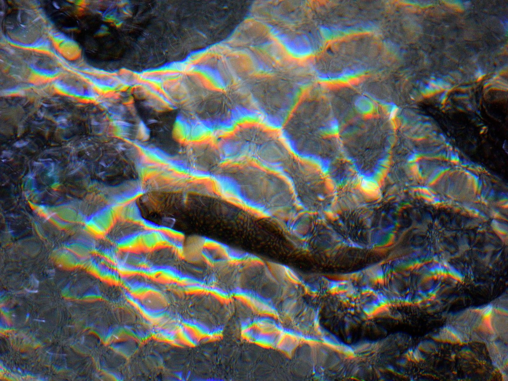
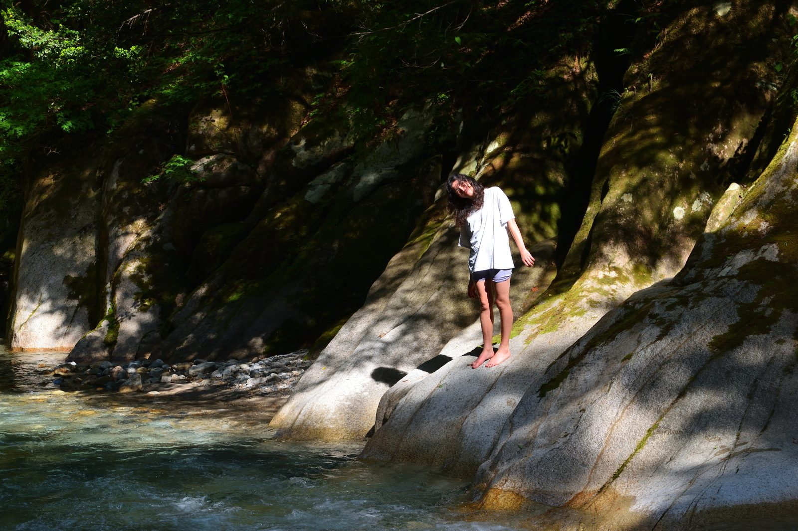
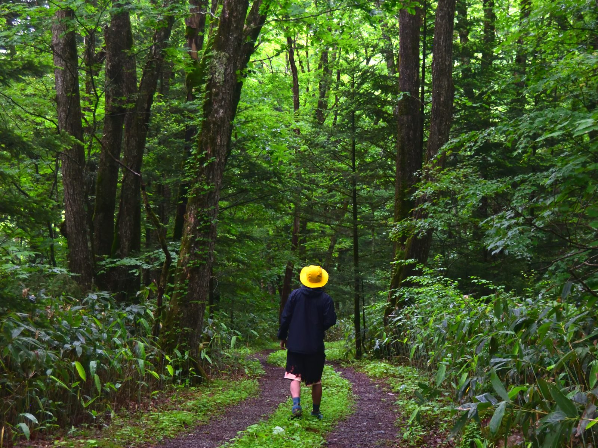
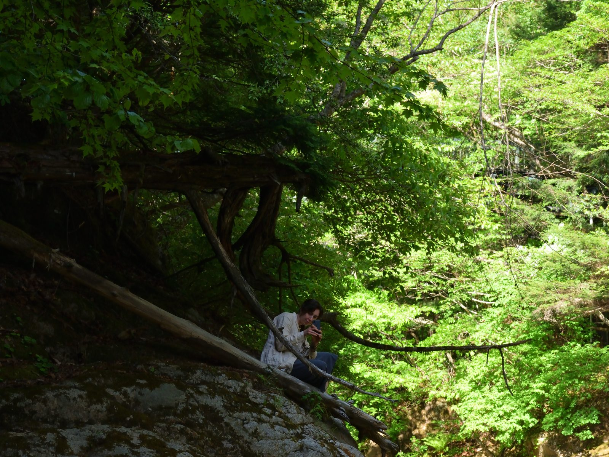
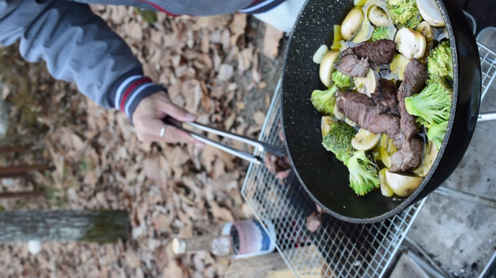

「03 五感を呼び覚ます学び」のカード写真の候補です。
好みのIDを「Aで」「Dで」などで教えてください、本番LPに反映します。
どれもしっくり来なければ「もっと別案」で別フォルダから追加探索します。
採る・作る・食べる・歩く・観察する。頭ではなく体で覚える学びの時間が、記憶に残ります。

湧水の川底を貫く光。「ただ見る」より「見つける」に近い、自然観察の象徴。採る・作るの前段「気づく」に合う。

光あふれる新緑の中、川に入って歩く一枚。涼しさ・足裏の感触・水音まで想像できる。身体丸ごとの体験感。

森の静けさに踏み入る瞬間。「どこへ行くんだろう」と誘導される構図。空間の奥行きが安曇野の広さを示す。

子どもたち自身が囲む食卓。「食べる」を主役に。ただし屋内ショット（情景の文脈は少し薄め）。

現状写真。食材が肉中心で、採る→作るのストーリーが伝わりにくい。差し替え推奨。